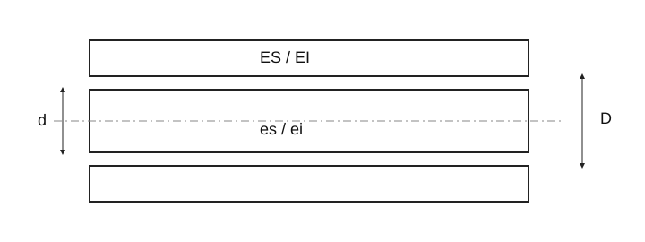

Типовые посадки ISO и их применение
Числовые данные ожидают полной сверки с действующим стандартом. Исходные значения сохранены; не считать их проверенными предельными размерами.

| Посадка | Сборка | Применение |
|---|---|---|
| H8/x8 (≤24 mm) H8/u8 (>24 mm) | Большой натяг; силовая или тепловая запрессовка | Ступицы, фланцы |
| H7/s6 H7/r6 | Средний натяг; запрессовка | Ступицы муфт, втулки подшипников |
| H7/n6 | Переходная; небольшое усилие | Якоря, зубчатые венцы, призонные болты |
| H7/k6 | Переходная; сборка мягким молотком | Разъёмные ступицы, шкивы, рычаги |
| H7/js6 (j6) | Переходная; ручное вдавливание | Легкоразъёмные втулки и ступицы |
| H7/h6 H8/h9 | Малый зазор; ручное надевание | Сменные колёса, кольца, цилиндрические направляющие |
| H11/h9 (H11/h11) | Скользящая; простая сборка | Распорные кольца, сельхозмашины |
| G7/h6 H7/g6 | Очень малый зазор | Скользящие колёса, муфты, стержни в опорах |
| H7/f7 F8/h6 H8/f7 F8/h9 | Ходовая; заметный зазор | Станки, подвижные стержни, коленвалы |
| H8/e8 E9/h9 | Свободная ходовая | Длинные валы |
| H8/d9 D10/h9 H11/d9 D10/h11 | Большой ходовой зазор | Валы с несколькими опорами |
| C11/h9 C11/h11 H11/c11 A11/h11 H11/a11 | Большой зазор; грубые допуски | Пальцы, защёлки, тормозные тяги, сварные детали |